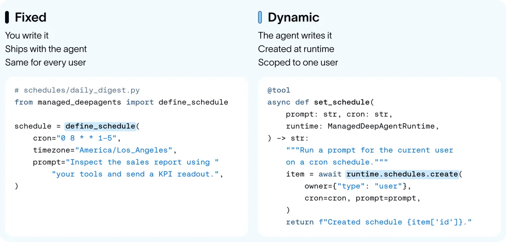

常駐代理的底座：五種 cron 用法，兩個關鍵零件
導讀原文：LangChain Blog〈How to Build Proactive, Always-On Agents with the Schedules SDK in Managed Deep Agents〉——產品方法論，含 static／dynamic 兩種排程範例碼
主動型代理的機制不新——就是超過五十年歷史的 cron；難的是排程屬於誰、記憶跟著誰、以及能不能被治理。

原文的觀察很直白：市面上幾個新興的主動型代理（Muse、Instinct、Dots、Claude Duet、Hone）底層都是同一招——把代理當 cron 任務跑。
開場用的是巴德－邁因霍夫現象：學會一個設計模式之後，突然覺得它到處都是。原文的解讀是，這種「到處都是」通常代表機制已經收斂成一種簡單形狀。
形狀就是：一個超過五十年歷史的作業系統原理，套在很新的用途上。cron 只決定「何時」，做什麼由那一段提示決定。
cron 解鎖的五種行為（編輯依原文小標計數）
| 能力 | 典型節奏（原文舉例） | 底層機制 |
|---|---|---|
| 記憶 | 每天一次 | 背景任務把過去對話壓成更密的記憶，原文稱「dreaming」 |
| 主動 | 每小時一次 | 依目標提示代理找新動作，動作再變成主動訊息 |
| 智慧分流 | 每十分鐘一次 | 盯 Slack、Email 等事件流，只挑值得講的 |
| 追蹤提醒 | 使用者指定的時點（原文未給固定週期） | cron 到期醒來提醒——原文強調 cron 不只用於背景 |
| 編排 | 定期（原文：at regular intervals） | 編排代理用 cron 監看整批代理，睡著等非同步子任務結束再醒來查看 |
→ 可橫向滑動
這五種行為共用同一個前提：代理必須能「在沒人講話時自己啟動」。這也是原文敢說主動已成為代理預設行為的依據。
（編輯觀點：節奏是可調的參數，不是能力的界線——調快一點就是監控，調慢一點就是每日彙整。）
「主動」的內容則看代理類型：通用代理的目標只是當好助理——提前提醒截止日、追蹤未結案的對話、丟出跟工作相關的新聞。
專門代理（原文舉 Hone 為例）有明確目標，cron 每隔一段時間提示它找新動作，動作再變成給使用者的訊息。
兩個零件：一個會排程，一個能被代理操作
| 零件 | 原文要求 | 沒做到會怎樣（編輯推論） |
|---|---|---|
| cron server | 讓開發者用任何排程加一段提示就能建，需要技能或權限時一併帶上；同一時點執行太多要用 jitter 把負載攤開 | 排程同時觸發會擠在同一瞬間，回應被拖慢 |
| 代理友善介面 | 代理能自己建立與修改提醒，但要是「容易、且受治理」的方式 | 追蹤提醒只能由人設定，代理無法為你排下一次 |
→ 可橫向滑動
Managed Deep Agents 把第一個零件內建了。一次排程執行在原文眼裡很單純：就是一段被排程觸發的提示，加上建立者本人的 thread 與記憶。
同一個提示，不同人建立就該看到不同的上下文——權限與資料邊界因此綁在「誰建的排程」，而不是綁在代理身上（編輯推論）。
（編輯推論：這也解釋了為什麼原文把 owner 放進每個動態排程呼叫裡，而不是放在代理設定檔。）
動態排程要多想一層：工具面
靜態排程只是一個檔案：define_schedule 寫死 cron 與時區，隨代理一起部署。動態排程則要把 Schedules SDK 包成工具丟給代理。
原文示範三個工具：建立、列出、刪除。刪除要帶擁有者條件，否則代理拿到 id 就能動別人的排程（編輯推論）。
單次提醒可以更省：check_in_later 只吃提示與分鐘數，時間到跑一次就結束，不必設計整套週期。
原文也提醒工具面要分級：不同類型的代理需要的排程工具集不同，有時一個 remind_me 或 check_in_later 就夠，不必一開始就給完整 SDK。
部署端只剩兩步：mda init 與 mda deploy。
治理那句原文只給了「容易、但受治理」，沒有給出權限模型的實作細節（編輯觀點）。
（編輯觀點：這篇是產品文件性質，多數能力敘述缺少可驗證的成效數字；唯一量化的是排程執行占比，且為 LangChain 自家平台統計。範例碼可讀性高，但刪除類工具務必自行補上權限檢查。）
帶走三件事
主動型代理＝cron 加判斷，不是新架構。難題在治理不在排程。
排程要綁人，不綁代理。記憶與權限跟著建立者走。
先給代理最小工具面。能建、能列、能刪，刪要帶條件。
同一主題的其他館藏
導讀為本站編輯內容（AI 摘解自原文與館藏重點，非官方文件）；引述數據出自原文，圖解與小標為編輯整理。內容經對照原文的獨立事實審查後發布。